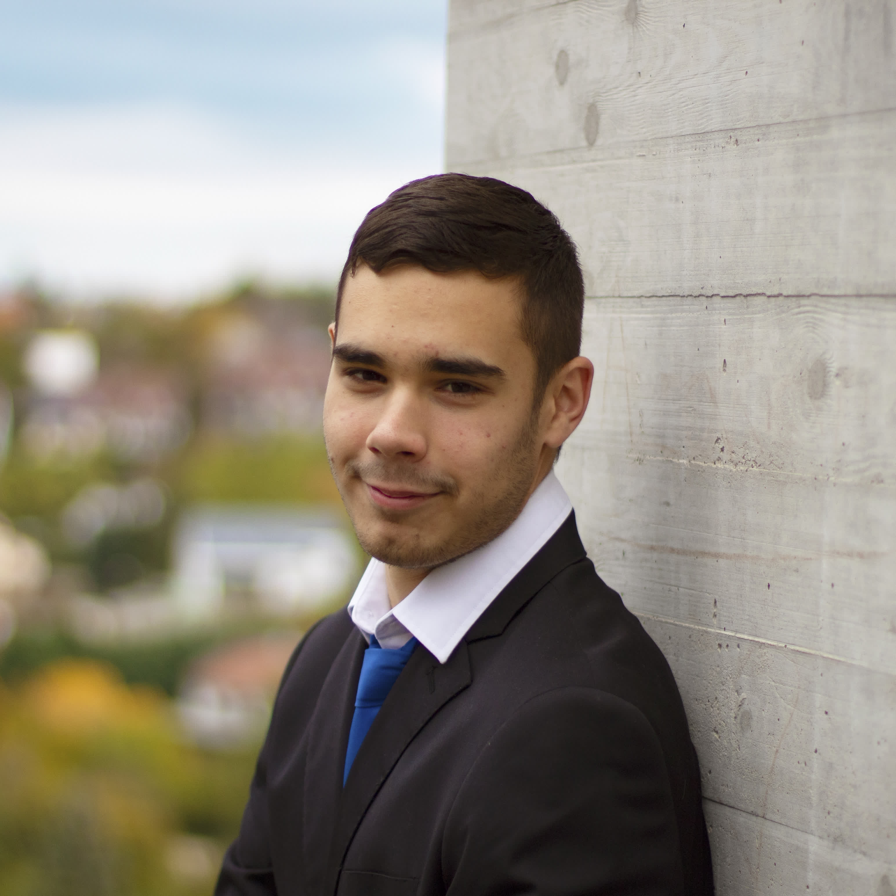

Home
Projects
Resume
Blog
Contact

Péter Tombor
Student at Lovassy László High School
 Student at Lovassy László High School Student at Lovassy László High School
Student at Lovassy László High School Student at Lovassy László High School